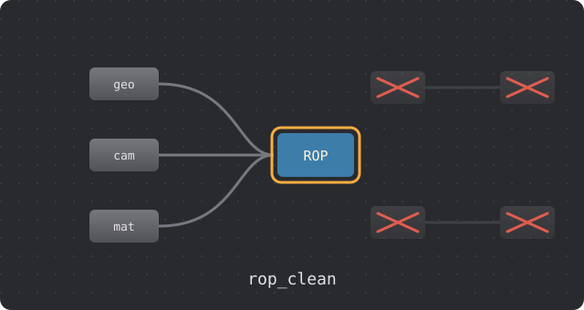

v1.2 · Houdini 22ROP Clean
Selecciona uno o varios ROPs y borra de la escena todo lo que no usan para renderizar: objetos, cámaras, luces, subnets, materiales y otros ROPs.
Huella SHA-256 del script en SHA256SUMS.
Instalación
- En un shelf, clic derecho → New Tool… y ponle de nombre ROP Clean.
- En la pestaña Script, con el lenguaje en Python, pega el script y pulsa Accept.
Uso
- Selecciona uno o varios ROPs, en
/outo unusdrender_ropen/stage. - Pulsa ROP Clean en el shelf.
- Revisa la lista de nodos a borrar y pulsa Limpiar. Con Solo informe la ves sin tocar nada.
Conserva los objetos y luces que ve el render (candidatos visibles y forzados, menos los excluidos), solo la cámara de cada ROP, todo nodo al que apunte un parámetro o una expresión de lo conservado, y los materiales asignados en el objeto, en el Material SOP o por atributo.
No cocina nada, así que es rápido en escenas pesadas. Los materiales asignados por atributo se leen de la geometría ya cocinada; si algún objeto no lo está, se conservan todos los materiales. Pon GEOMETRY_MATERIALS = "cook" al inicio del script para cocinarla y limpiar también los materiales.
Si el análisis tarda, Interrupt lo cancela sin borrar nada.
Los subnets y matnets se quedan solo como contenedor: lo que no se usa dentro también se borra.
Todo es un único paso de Undo. Si la escena tiene nombre, guarda antes una copia de seguridad numerada del .hip.
Los nodos protegidos (dentro de assets bloqueados o sin permisos) se dejan como están y se listan al terminar.
Funciona con Mantra, Redshift, Arnold y Karma (Solaris). Con un motor que no reconoce, conserva todos los objetos visibles. Usa el valor de los parámetros en el take activo.